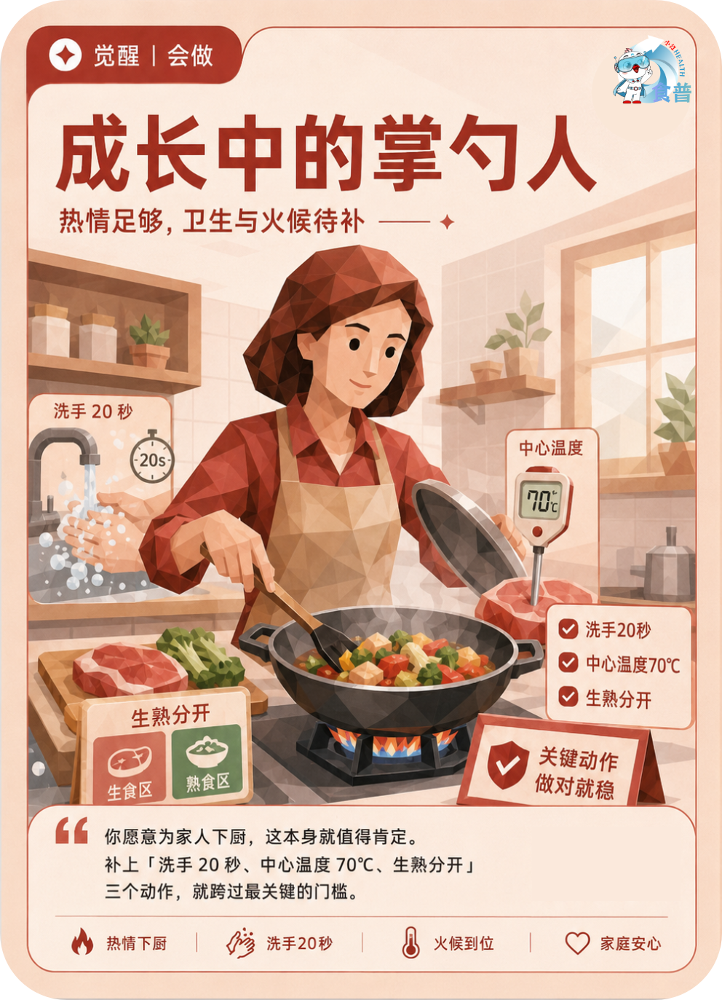

健康主理人
觉醒
会做
F13
成长中的掌勺人
热情足够,卫生与火候待补
你愿意为家人下厨,这本身就值得肯定。补上「洗手 20 秒、中心温度 70℃、生熟分开」三个动作,就跨过最关键的门槛。
手机端可点击“打开原图”后长按图片保存；也可以直接长按上方图卡保存。

热情足够,卫生与火候待补
你愿意为家人下厨,这本身就值得肯定。补上「洗手 20 秒、中心温度 70℃、生熟分开」三个动作,就跨过最关键的门槛。
手机端可点击“打开原图”后长按图片保存；也可以直接长按上方图卡保存。